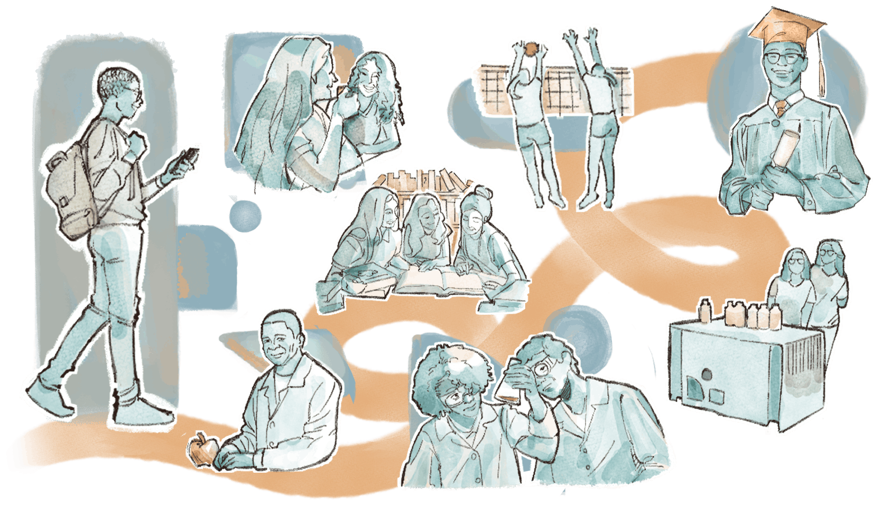
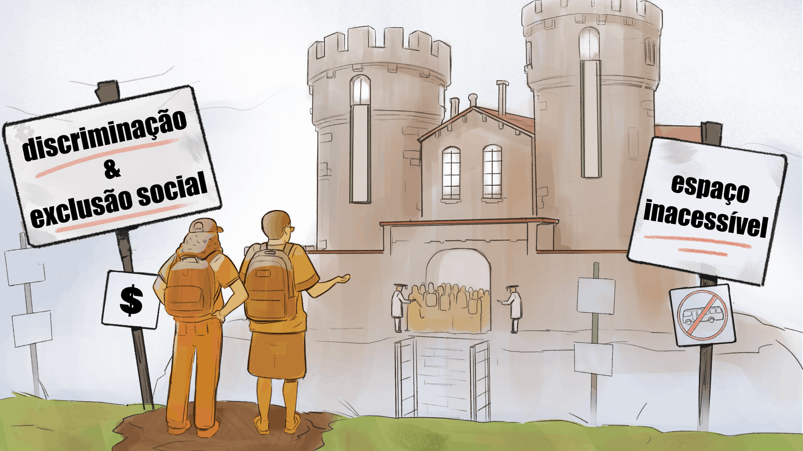
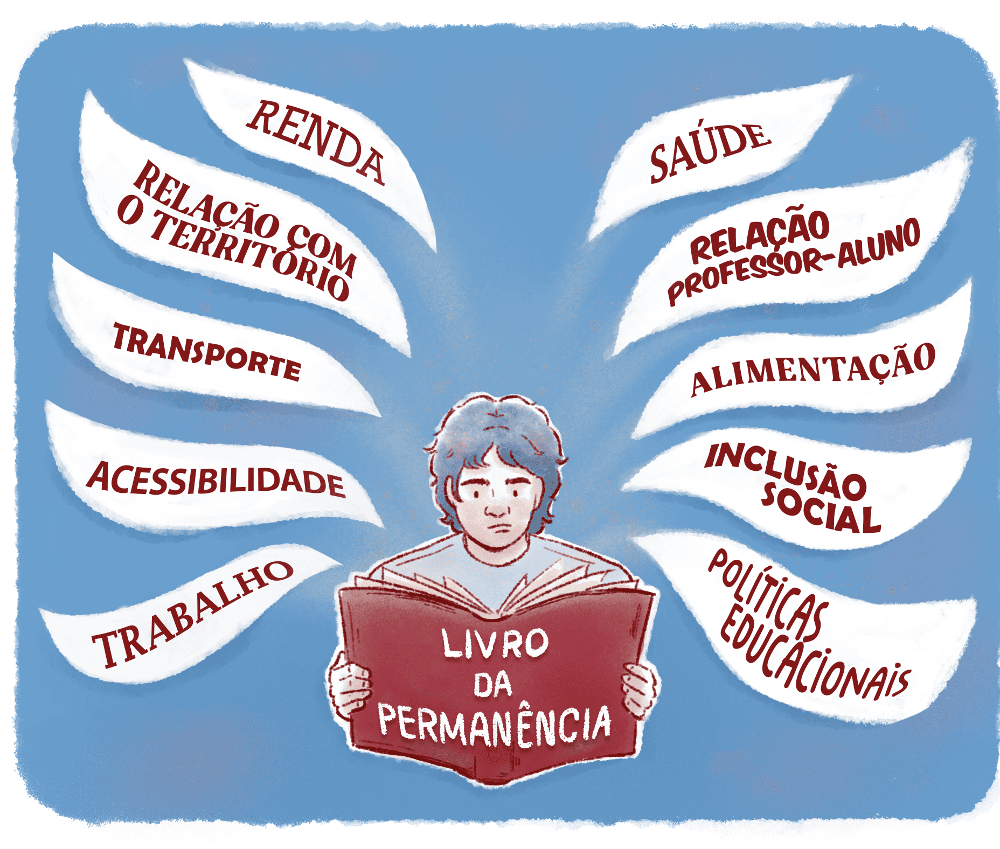

Permanência e Êxito na EPT
Para compreender os desafios e potencialidades da EPT, é importante olhar para dois indicadores fundamentais: a permanência e o êxito. A permanência se refere à continuidade dos estudantes em seus percursos formativos até a conclusão do curso, enquanto o êxito está relacionado à aquisição das competências necessárias para a formação integral e para a inserção do sujeito estudante no mundo do trabalho e na sociedade. Esses indicadores são influenciados por diversos fatores, tanto internos quanto externos à instituição de ensino.
A permanência e o sucesso discentes são resultados de um processo dinâmico que envolve múltiplas dimensões, desde aspectos individuais até fatores institucionais sociais. De acordo com Gerson Carmo, Carlos Arêas e Heise Arêas (2022), para compreender como a relação entre esses fatores pode contribuir para a permanência, é preciso, também, rever as realidades históricas e estruturais da educação com os desafios do cotidiano escolar.

Título: Permanência - jornada individual e coletiva
Fonte: Prosa (2025c).
Na EPT, a promoção da permanência e do progresso acadêmico dos estudantes está diretamente ligada à implementação de ações eficazes de gestão, à organização estratégica do currículo e à oferta de suporte aos estudantes.
Compreender os fatores que contribuem para a evasão e os métodos para enfrentá-la é indispensável para uma educação que atenda efetivamente às necessidades dos sujeitos. Afinal, como destacam Maria Ciavatta e Marise Ramos (2011), a educação deve ser pensada como um direito a ser garantido a todos, promovendo a formação plena do indivíduo.
Agora, imagine que uma instituição de ensino contrate professores capacitados e especializados no exercício de suas funções de ensinar. Entretanto, a mesma instituição não realiza nenhum tipo de interlocução com a sociedade e com o entorno da região onde se localiza, além de não diagnosticar os fatores que levam à desistência dos estudantes ao longo do curso. Assim, mesmo com os melhores professores, a instituição não adota medidas de permanência para os estudantes, e a taxa de evasão segue crescente de modo que poucos estudantes conseguem, de fato, concluir suas formações. Este é um retrato hipotético que demonstra como a atividade educacional deve ser um processo incessante e em constante transformação, que se descreve como uma trajetória de descoberta, entendimento e ações relevantes.

Título: Impactos do conhecimento encastelado
Fonte: Prosa (2025d).
Pensar a atividade educacional de tal forma não envolve apenas a disseminação de saberes, mas também a formação de ambientes e oportunidades que possibilitem o envolvimento de estudantes e demais integrantes da comunidade escolar em um exercício reflexivo e transformador.
Permanência e êxito escolar
A permanência e o êxito escolar são indicadores da qualidade educacional. Identificar fatores que contribuem ou dificultam a permanência é crucial para melhorar a experiência educacional. Nesse sentido, a evasão escolar deve ser analisada sob diferentes perspectivas, incluindo fatores sociais, institucionais e individuais. Laura Sacramento, Monck Albuquerque e Carlos Cypriano (2021) apontam que o fenômeno pode ser caracterizado como multifatorial, já que envolve desde questões econômicas e culturais até fatores relacionados à própria estrutura educacional.

Título: Fatores que contribuem para a permanência estudantil
Fonte: Prosa (2025e).
Diante da complexidade do problema da evasão escolar, é importante adotar estratégias múltiplas para combatê-la. De acordo com Vanessa Souza et al (2021), a reformulação curricular, orientada por uma abordagem colaborativa e participativa, pode ser uma estratégia eficaz para promover a permanência e o êxito dos estudantes na EPT. Fatores internos, como a organização curricular, e externos, como as condições socioeconômicas, influenciam diretamente a permanência e o êxito estudantil. Portanto, as instituições devem implementar ações integradas de apoio aos estudantes, visando um impacto positivo em sua inserção socioprofissional, assunto que será melhor explorado nos próximos capítulos.
As condições sociais e institucionais são fatores que afetam diretamente a decisão dos estudantes de permanecer ou abandonar a escola. Mesmo fatores que são considerados individuais não excluem a responsabilidade da instituição de apoiar os estudantes ao longo de sua trajetória formativa. É preciso investigar, de forma permanente, as diversas dimensões envolvidas na problemática da permanência, estabelecendo relações entre essas dimensões e os resultados obtidos.
A variedade de programas disponíveis em múltiplas formas e níveis atende a um público diversificado, incluindo jovens e adultos que estão mudando de carreira e pessoas que desejam retornar ao mundo do trabalho. Considerando que o perfil econômico e social dos estudantes é heterogêneo, ou seja, que há diferentes realidades entre eles, é fundamental investigar de que maneira a configuração organizacional e as metodologias utilizadas influenciam suas percepções de significado e o sentimento de pertencimento a essa trajetória formativa.
Ancorada nessa perspectiva, a EPT não se limita apenas à capacitação profissional, mas também apoia o aprimoramento pessoal, respeitando as histórias e aspirações de cada um. Incentiva-se o avanço na carreira e no conhecimento a partir de uma visão abrangente da educação que valoriza o ser humano em suas múltiplas dimensões. Para tanto, a gestão educacional precisa conectar as necessidades educacionais com as demandas sociais e econômicas, considerando as identidades de cada região.
Por exemplo, no Instituto Federal do Maranhão (IFMA) há cursos de qualificação profissional direcionados a populações indígenas, que consideram suas particularidades culturais e econômicas. Essa estratégia demonstra o compromisso dos Institutos Federais com a promoção da inclusão social e o respeito à diversidade.
Outro exemplo é o que ocorre no Instituto Federal de Goiás (IFG), onde foi criado o projeto Almeja (2024). Esse projeto disponibiliza cursos gratuitos de formação técnica para pessoas adultas, o que ilustra o compromisso dos IFs com a inclusão digital e a requalificação do trabalhador. Oportunidades como essa auxiliam no combate à desigualdades sociais e na democratização do acesso à educação. Para conhecer mais sobre o Almeja, acesso o site do projeto.